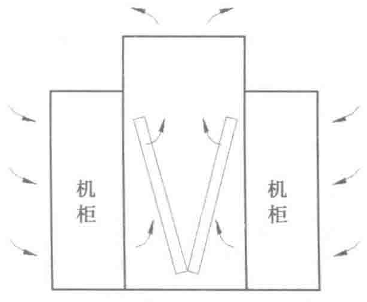
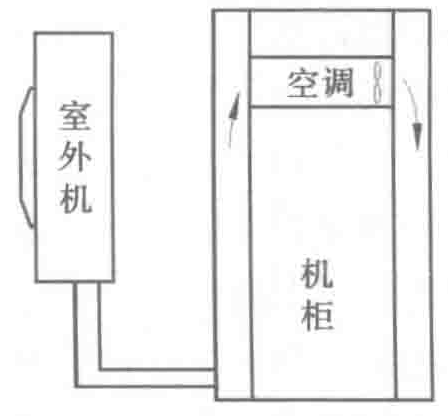

这种方式主要特点有：
- 无须再配置风扇，由热压维持了空气的自然流动循环，使得空调末端设备的能耗消耗降低至0。
- 顶置冷却单元的气流组织较好，符合热空气上升冷空气沉降的流动特性。
- 其安装施工需要与机柜配合，相对复杂。
- 采用水系统时水管路位于机柜上方，有漏水隐患。
同时，考虑到仅由热压维持的气流循环受空气温度、排风等其他气流的影响较大，在冷通道上方安装冷却装置时，也可以在该冷却装置中安装风机，利用机械通风形成效率更高的气流循环。
图4-17为将冷却盘管放在机柜热通道内部的气流组织示意，此种通风方式也是依靠空气热压进行自然对流循环，只不过将放在顶上的冷却盘管放在通道内部，如此对热通道的维护方面会比较麻烦。
目前来说上送上回的应用方式不是很多，仅有个别国内外数据中心进行尝试。
4.4.4 机柜级送风
随着机柜热密度不断增大，传统的气流组织越来越不能满足设备散热的需要，所以开始出现了冷却效率更高的机柜级送风，机柜级送风的制冷系统与机柜相关联，以专门服务于机柜作为设计目的。有微型空调、冷水背板等形式。
1. 微型空调
空调设备会占用机柜5～10U的高度，安装于机柜中，同时机柜需要单独的将前后通道封闭起来，形成独立的循环，图4-18所示为直膨式空调，也可以采用水冷式空调。通常采用这种形式时还会将其他配电设备如UPS、电池等集中在一起，形成一体化机柜，可以直接用来使用。主要应用于机柜很少的微型数据中心。


2. 冷水背板
冷水背板在机柜的后方安装一个有“冷水循环的板”，整个系统主要由冷水分配控制器